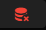
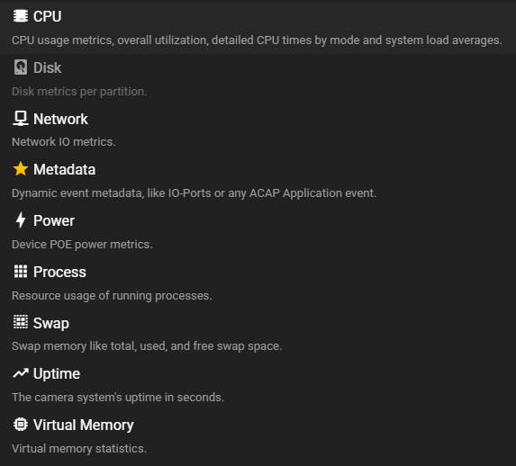
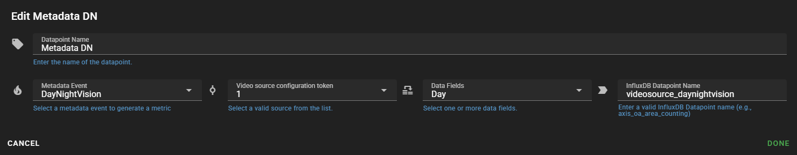
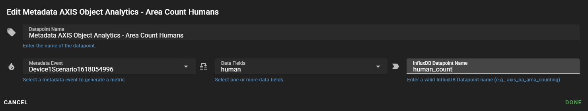
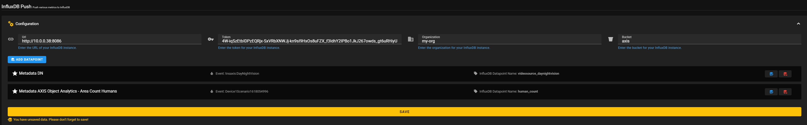
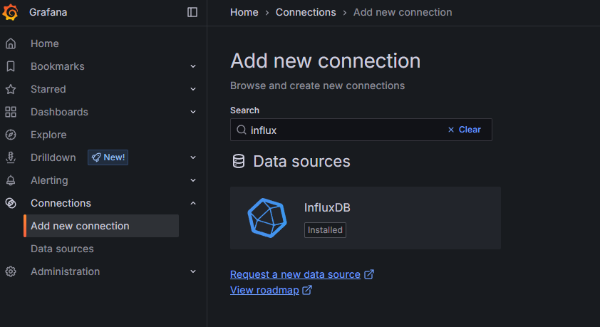
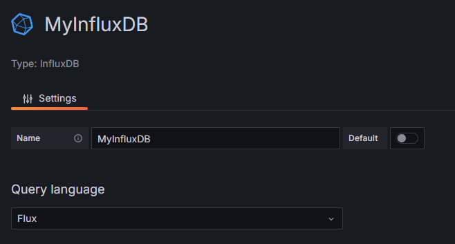
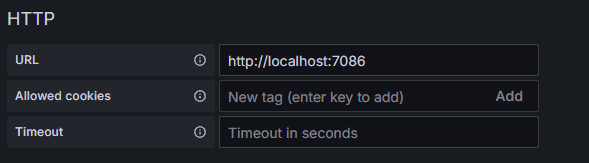
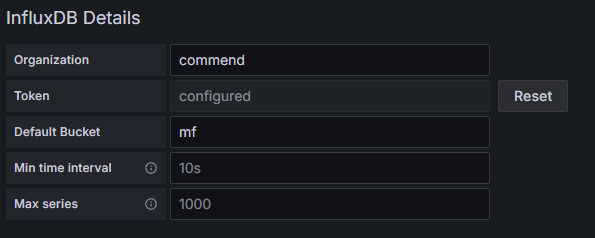
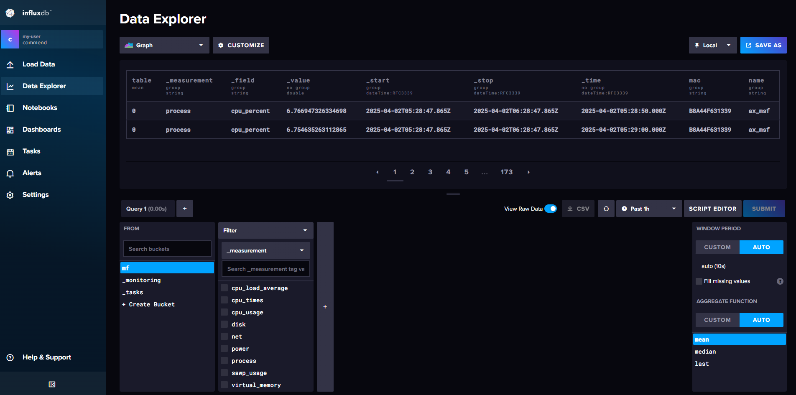

InfluxDB Push Configuration
Complex Feature
This feature leverages a highly dynamic approach for exporting and pushing data, making it inherently more complex than standard functionalities. It requires a understanding of InfluxDB and its operational concepts, as InfluxDB may not be part of the day-to-day toolkit for many users. While setting up InfluxDB and connecting it with Missing Feature ACAP is straightforward for those with basic technical skills, it does demand some prior experience and familiarity with these systems.
Overview
This feature introduces two distinct approaches for data collection:
-
Non-Metadata Data Points:
All non-metadata data points have an interval-based configuration. You can specify how frequently each datapoint/metric is collected.Note
Each non-metadata data point can be added only once.
-
Metadata Data Points:
Metadata data points are event-based. They are not collected on a fixed interval but are triggered by specific events.Tip
You can add as many metadata events as you want, allowing you to capture detailed information exactly when it matters.
Use it with Grafana
The primary idea behind this feature is to use it with Grafana, allowing you to build any dashboard you can imagine. By leveraging Grafana's powerful visualization capabilities alongside your InfluxDB data, you can create insightful and dynamic dashboards tailored to your needs.
Prerequisites
- InfluxDB: A running InfluxDB instance. If you don't have one, follow the InfluxDB Get Started guide.
- InfluxDB API Token: ACAP uses token-based authentication with InfluxDB. Please create an API token by following the instructions in the InfluxDB Create Token guide.
- InfluxDB Bucket: You need an InfluxDB bucket.
- InfluxDB Org: You need the name of your InfluxDB organization.
Data Point Buttons
Edit Data Point
Remove Data Point

Configure Non-Metadata Data Points
Add Non-Metadata Data Points
Examples of Non-Metadata Data Points
- CPU
- Disk
- Uptime
- etc.
Click the ADD DATAPOINT button to open the data point adding menu.
Select the data point to add. 
Note
If any data point is grayed out (disabled), it has already been added and cannot be added twice.
Configure Non-Metadata Data Points
To configure the data point, click on the Edit Data Point button.
- Set Interval:
Define the desired interval at which data should be pushed to InfluxDB.
Click the DONE button when you have finished, then click the SAVE button.
Configure Metadata Data Points
Add Metadata Data Points
Click the ADD DATAPOINT button to open the data point adding menu and select Metadata.
After adding a new metadata datapoint, you will see that the configuration is initially incomplete.
{kind=link}
Configure Metadata Data Points
Open the configuration via the Edit button.
- Data Point Name:
For better differentiation in the configuration list, you can change the name of the data point. - Select Trigger:
Choose the event that will trigger the metadata capture (e.g., sensor threshold exceeded, error event, etc.). - Define Metadata Fields:
Specify which metadata fields should be included in the payload. - Define InfluxDB Data Point Name:
The InfluxDB data point name is the key with which the data is stored in InfluxDB. - Repeat:
Add as many metadata events as needed. - Save Configuration:
After finishing the configuration, don't forget to click theSAVEbutton.
Metadata Configuration Example
Metadata Day Night

{kind=link}
Metadata AXIS Object Analytics - Area Count Humans Example
Push the Day Night metadata event

{kind=link}
The final configuration would look like this:

{kind=link}
Grafana and InfluxDB Integration
This guide shows you how to integrate Grafana with InfluxDB using the Flux query language. Follow the steps below to set up your datasource and create a dashboard for visualizing data/metrics from your AXIS Camera.
Prerequisites
Info
You should already have everything in place, as it’s configured identically to the Missing Feature ACAP setup.
- Missing Feature ACAP: InfluxDB Push enabled, and configured.
- InfluxDB: A running InfluxDB instance.
- InfluxDB API Token: ACAP uses token-based authentication with InfluxDB.
- InfluxDB Bucket: You need an InfluxDB bucket.
- InfluxDB Org: You need the name of your InfluxDB organization.
Add InfluxDB Datasource in Grafana
First, navigate to your Grafana instance and add a new InfluxDB datasource.

Configure Datasource Settings
- Datasource Name: Set a name for your datasource.
- Query Language: Select Flux as the query language.

Set Your InfluxDB HTTP URL
Specify your InfluxDB HTTP URL in the settings.

Enter InfluxDB Credentials
Fill in your InfluxDB Organization, Token, and Default Bucket.

Create a Dashboard
Navigate to the dashboard section in Grafana and add a new visualization. For example, create a panel to monitor the Missing Features CPU usage.
{kind=link}
Extracting Flux Scripts from InfluxDB Data Explorer for Grafana
Use the InfluxDB Data Explorer to inspect the data and use the query builder in combinitation, to switch afterwards to script editor mode to copy the flux script for grafana. 
{kind=link}
For example, let's locate our metadata event device_io_virtualport that we previously configured and executed to ensure an entry exists in the database:
- Select the bucket.
- Choose
metadata. - Set the filter to
name. - Select
device_io_virtualport. - Uncheck the
AGGREATE Functionon the right side (it's a boolean value). - Enable the
View Raw Datamode to display our entries in a table.
{kind=link}
- Click on the Script Editor button to view the Flux script.
- You can now use this Flux script in Grafana.
{kind=link}
Public Tutorials and Additional Resources
For further learning and more detailed tutorials, consider the following public resources:
-
Grafana Tutorials:
Official Grafana Tutorials – Learn more about creating dashboards, panels, and advanced visualizations. -
InfluxDB Documentation:
Official InfluxDB Docs – Detailed guides on installation, configuration, and usage of InfluxDB. -
Flux Language Guide:
InfluxDB Flux Documentation – In-depth information on the Flux query language and its capabilities.